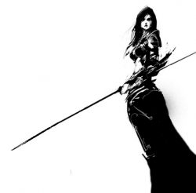

Alberie
Points : 2

Joué par :
Alberie
Joué par :
[ Information masquée ]
Age : Une vingtaine d'années
Lieu de naisance : Les monts d'Altérac
Sexe : Femme
Race : Humain
Faction : Alliance
Formation : Guerrier
Guilde :
Maison BayleArtisanat 1 : Mineur
Artisanat 2 : Forgeron
Informations hrp : Ce que l'on remarque chez cette jeune femme, c'est sa taille, relativement imposante pour les gens de sa race.
Un bon mètre quatre-vingt dix pour pas moins de quatre vingt kilos de muscles déliés, la carrure d'épaules héritée du clan auquel elle appartient, des cheveux et des yeux aussi sombres que la terre ... Autant de caractéristiques physiques qui ne mettent pas en doute le sang barbare qui coule dans ses veines et qui est également l'origine de son caractère fier et trempé.
Outre cet aspect singulier, sa tenue vestimentaire tranche avec les mises des citadins : Fourrures de bêtes, cuir grossièrement taillé et assemblé, sans compter la hache à quadruple tranchants dont elle ne se sépare jamais. On peut noter qu'un vieux cor usé, dont la felure l'empêche sans doute de produire un son clair, pend à sa ceinture en permanence.